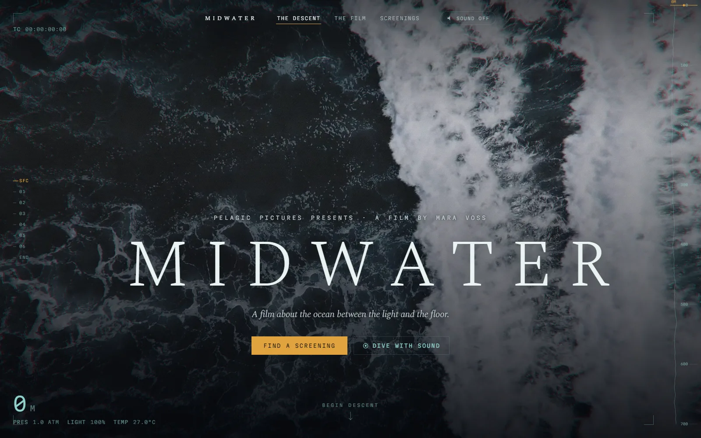
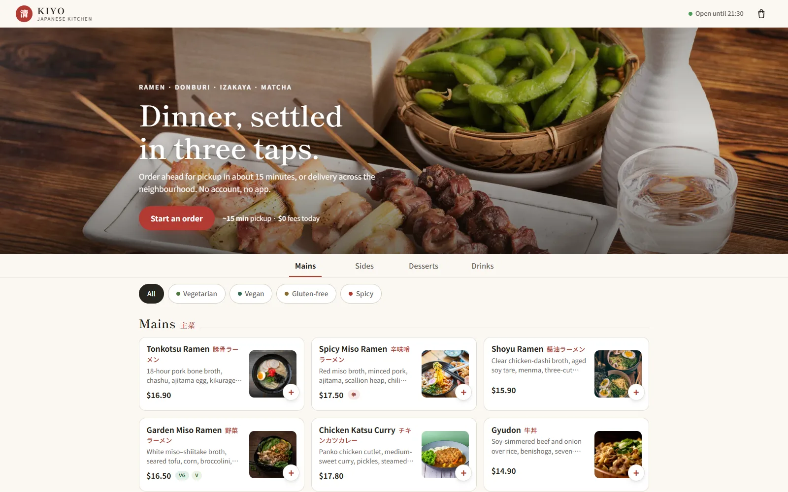
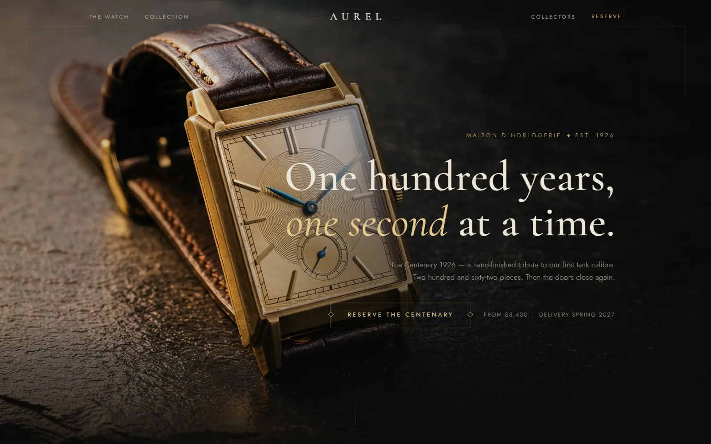
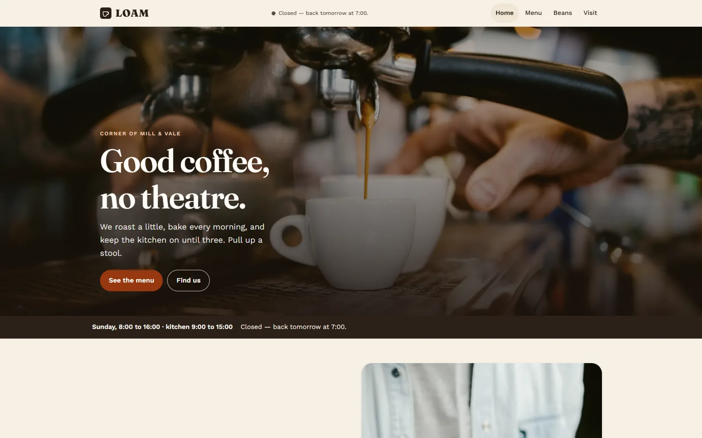
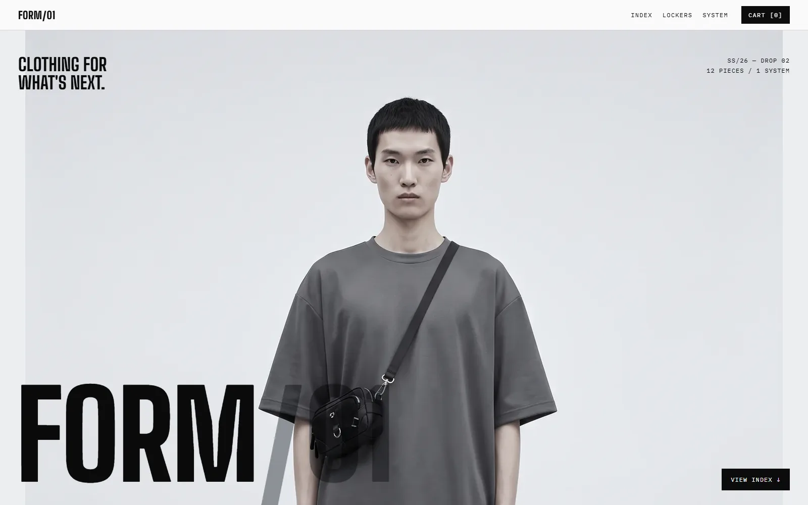
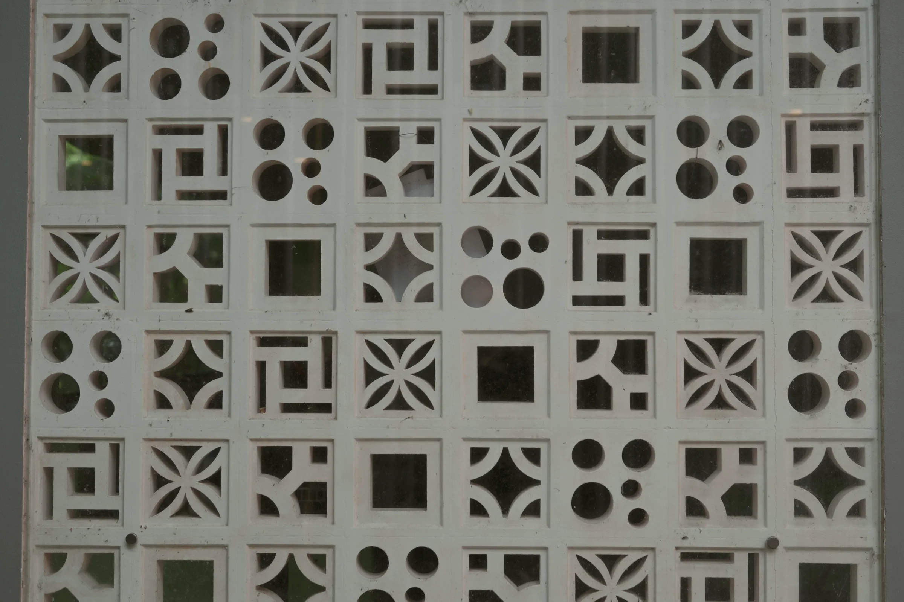

01
Midwater
A feature documentary's site, cut as one descent in six stations.
Thornbury Digital · A design studio in Singapore
We design and build websites for companies that need to look like they mean it.
Websites worth a second look.
Singapore
Drag the sun. The light on this page is the sun over Singapore, at this minute.

A feature documentary's site, cut as one descent in six stations.

A Japanese kitchen in Portland. Thirty dishes, ordering built for a phone.

A watch house one hundred years old this year, one second at a time.

A corner café and small roastery. Build a tray, send it to the counter.

Twelve technical pieces, engineered to be worn together as one system.
How we work
What your site loads, what it says, and what it fails to say to a search engine reading it aloud. Findings first, opinions second. Then the page is composed around the content you actually have, not a layout you fill in afterwards and hope fits.

The screen · Ventilation blocks, the tropical-modernist answer to sun and rain
Every page of this site is lit through one. The sun is real: its height and bearing over Singapore at this minute decide where the light lands.
Start a project
A site that needs replacing, a brief and a deadline, or nothing yet. We measure it, draw for the words you have, and hand you every key at the end.